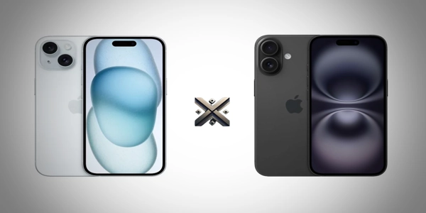

Em 2025, muitos consumidores enfrentam uma dúvida importante: escolher o iPhone 15 ou investir no novo iPhone 16? A cada geração, a Apple não apenas eleva as expectativas, mas também desperta uma série de perguntas práticas — preço, bateria, opções de cores, capacidade de armazenamento, entre as dúvidas mais recorrentes estão como desligar, reiniciar o dispositivo ou capturar a tela.
Para facilitar sua escolha, preparamos um comparativo completo entre o iPhone 15 e o iPhone 16. Aqui você confere todas as diferenças, novidades e detalhes importantes.Assim, fica muito mais fácil decidir qual modelo combina mais com você em 2025.

O iPhone é um dos maiores símbolos de inovação tecnológica no mundo dos smartphones. Lançado pela Apple em 2007, o dispositivo unificou telefone, internet e música em um único aparelho, mudando para sempre a indústria mobile. Desde então, o iPhone tem evoluído com avanços significativos em design, desempenho, câmeras e segurança.
Além do visual elegante e da interface intuitiva, o iPhone se destaca pelo ecossistema integrado da Apple, que conecta dispositivos como iPads, Macs e Apple Watch de maneira fluida. As atualizações frequentes do sistema são fundamentais para manter o aparelho protegido, trazer novas funcionalidades e prolongar sua vida útil.
Em 2025, com modelos como o iPhone 15 e o iPhone 16, a Apple reforça seu compromisso com a excelência. Recursos como câmeras de alta performance, baterias otimizadas, tecnologia 5G e carregamento rápido tornam os novos iPhones ideais tanto para produtividade quanto para entretenimento. nindo desempenho de alto nível e design refinado, o iPhone permanece como um dos principais destaques para quem valoriza uma experiência móvel de excelência.
| Característica | iPhone 15 | iPhone 16 |
|---|---|---|
| Processador | A16 Bionic | A18 Pro |
| RAM | 6GB (Pro: 8GB) | 8GB (Pro: 10GB) |
| Bateria (quantos mAh) | 3.349 mAh | 3.500 mAh a 4.200 mAh |
| Câmeras | 48MP principal | 48MP com IA aprimorada |
| Tela | 6,1 | Dynamic Island aprimorada |
| Sistema Operacional | iOS 18 | iOS 18 |
Mantenha pressionado o botão lateral junto com um dos botões de volume.
É pressionar rapidamente o botão de aumentar volume, em seguida o de diminuir volume, e então segurar o botão lateral até que o logotipo da Apple apareça na tela.
Também é possível apertar ao mesmo tempo o botão lateral e o botão de volume para cima. A captura é salva no app Fotos.
O iPhone 16 eliminou o notch e trouxe apenas a Dynamic Island mais discreta, com estrutura mais fina e resistente em titânio. O iPhone 15 seguiu a linha clássica de design da marca, mantendo a estética familiar que conquista seus admiradores.
O iPhone 15 apresenta um sistema de câmeras eficiente, liderado por um sensor principal de 48 MP. Ele é capaz de capturar imagens ricas em detalhes, com boa reprodução de cores e ótimo desempenho em ambientes bem iluminados. O aparelho se destaca ao capturar fotos de qualidade mesmo em condições de baixa luz. Para gravações, o iPhone 15 continua a reputação da Apple, garantindo vídeos estáveis e com excelente definição, perfeitos para o dia a dia.
O iPhone 15 entrega até 20h de reprodução de vídeo. O iPhone 16 chega a 22h, alavancado pelo novo chip A18 Pro.
iPhone 15 inicia no iOS 17 e terá suporte até 2029. O iPhone 16 chega ao mercado já equipado com o iOS 18 e tem previsão de receber atualizações de software até, pelo menos, 2030.
Com certeza! É uma ótima escolha para quem deseja um modelo atual, com excelente performance e um custo mais atrativo.
Sim, se você quer tecnologia de ponta, melhor duração de bateria, novos recursos de câmera e atualizações garantidas por mais tempo. Ótimo para quem busca durabilidade e performance.
| Perfil de Usuário | Melhor Escolha |
|---|---|
| Custo-benefício | iPhone 15 |
| Fotografia Profissional | iPhone 16 |
| Gamer | iPhone 16 |
| Uso Básico | iPhone 15 |
| Longa Durabilidade | iPhone 16 |
Se a ideia é economizar e, ao mesmo tempo, garantir um iPhone de alto desempenho, o iPhone 15 se apresenta como uma opção confiável para 2025. Seu desempenho, qualidade de câmera e bateria seguem competitivos para os padrões atuais, garantindo ótima experiência sem precisar investir tanto.
Agora, se você busca o melhor da tecnologia, maior durabilidade, atualizações futuras e uma performance que vai se manter relevante até 2030, o iPhone 16 é o investimento certo. Ele é ideal para quem não abre mão de recursos avançados em fotografia, conectividade mais rápida e design moderno.
Escolha com base nas suas prioridades e orçamento, pois ambos são ótimas opções para 2025.